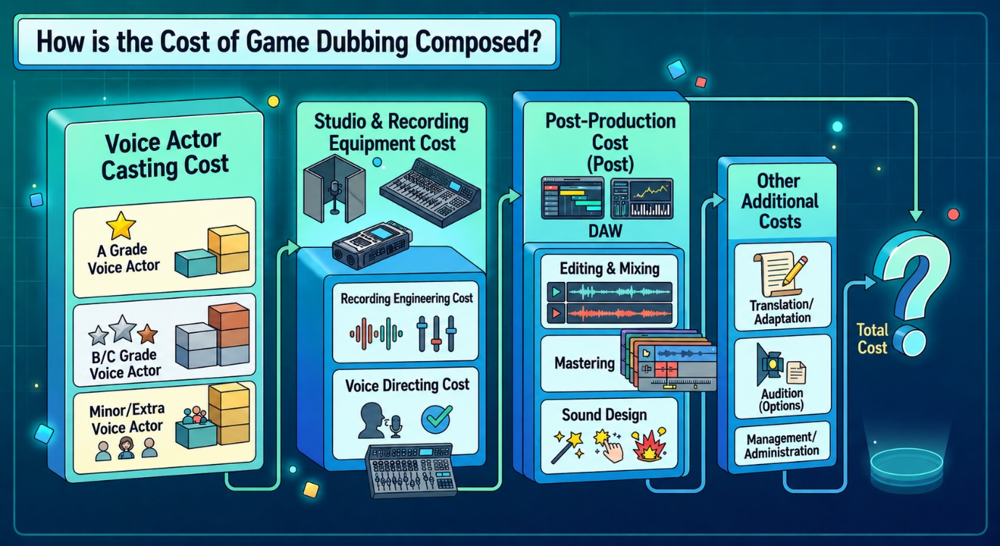
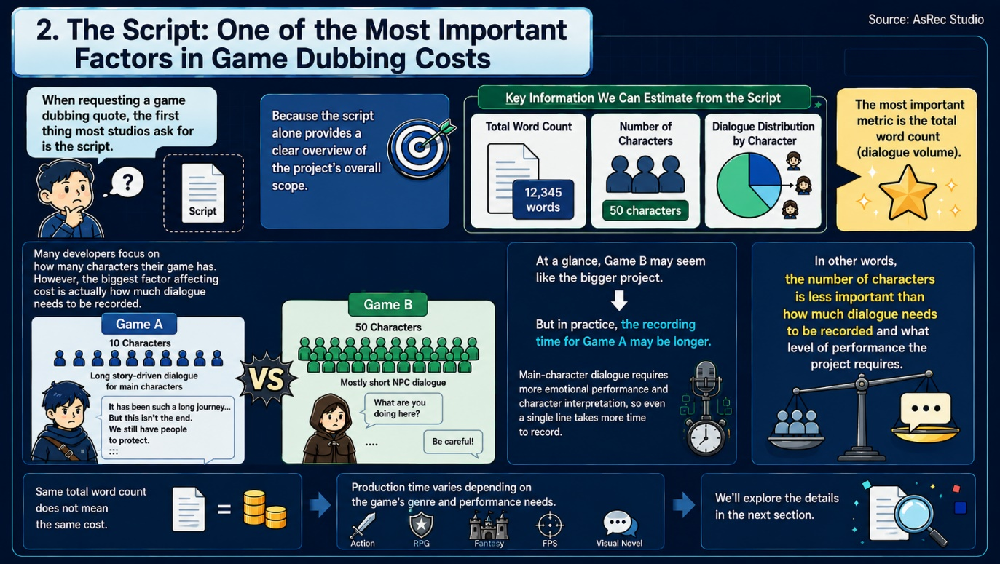
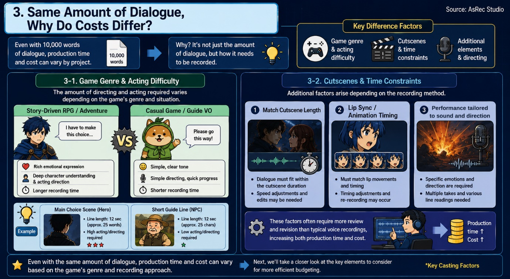
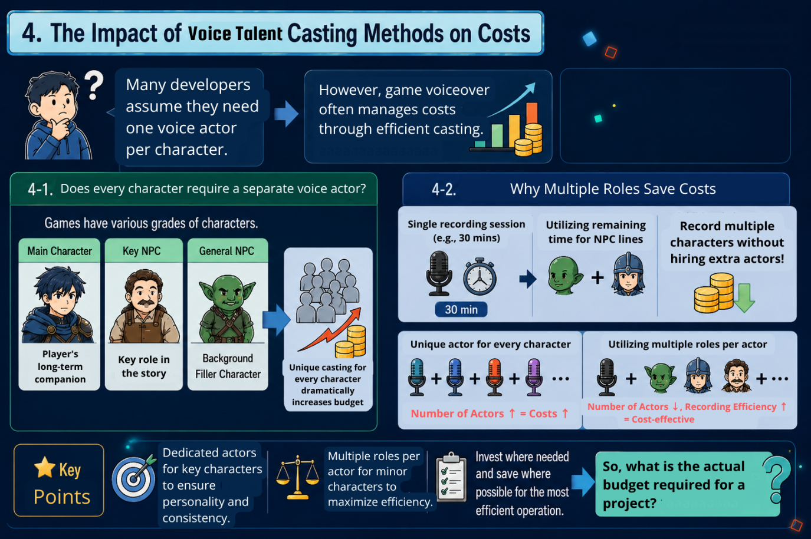

Hello, this is Asrec Studio!
For game developers looking to add voiceovers to their projects, the most pressing concern is often the production cost.
"What kind of budget do we need to bring Korean voiceovers to our game?"
"How many voice actors should we cast?"
"How much does it actually cost to dub the entire script?"
If you are a project manager or an indie developer preparing for game voice production for the first time, these questions are likely at the top of your mind. The challenge is even greater when you are trying to maximize both quality and efficiency within a limited budget.
However, game voiceover costs cannot be calculated simply by multiplying the number of actors by the recording hours. There are many variables involved, including the total word count, character complexity, recording methods, performance difficulty, and the scope of post-production.
In this post, we will break down the key factors that determine voiceover costs and share tips on what to look for when planning your budget.
1. How is Game Voiceover Cost Determined?

The production cost for game voiceovers is largely derived from three main stages.
1-1. Voice Casting and Recording Fees
One of the most significant portions of the budget goes toward voice talent. This involves not only finding the right voices but also ensuring they fit the character and atmosphere of the game, as well as securing the necessary recording time.
Costs can vary based on several factors:
- The number of voice actors required
- The script volume per character
- Whether the roles are primary or secondary
- The experience and renown of the talent
- Estimated recording time
Crucially, in games, having many characters does not always mean you need as many voice actors. Depending on the project's structure, you can manage costs wisely by casting professional talent for major roles while utilizing more efficient approaches, such as one actor voicing multiple NPCs, for minor characters.
1-2. Recording and Voice Directing Costs
Game voiceover is more than just reading lines; it is about capturing the right personality, situation, and emotion for each character.
For instance, the line "It's okay" requires completely different performances depending on the context:
- Are you comforting someone?
- Are you hiding your sadness?
- Are you suppressing your anger?
Voice directing is the process of aligning these character directions and emotions with the voice actor. Effective directing helps achieve the desired performance quickly and minimizes the need for re-recording. This not only shortens the overall production time but also prevents potential extra costs, ultimately making your project budget more efficient.
1-3. Post-Production: Editing, Mixing, and QA
Recording is just the beginning. To get audio ready for the game, a precise post-production process is required:
- Audio editing, including noise removal, breath cleanup, and pronunciation checks
- Leveling, mixing, and mastering
- File naming and organization
- Final Quality Assurance (QA)
Game projects often involve managing anywhere from hundreds to tens of thousands of individual audio files. Since even a single file error can affect the player experience, this final review stage is a critical part of the production process.
Ultimately, game voiceover costs are not determined simply by "how many actors are hired," but by the entire journey from casting and directing to recording and final post-production.
So, what is the most important document to have ready when reviewing a quote?
The script.
2. The Script: The Key Factor in Determining Costs

When you request a quote for game voiceovers, the first document we ask for is the script. This is because the script alone allows us to estimate the overall scale of the project. Through the script, we can identify several key metrics:
- Total word count
- Total number of characters
- Dialogue volume per character
Among these, the total word count, or dialogue volume, is the most critical metric. While many developers initially focus on "how many characters" there are, the actual production cost is more heavily influenced by the volume of lines that need to be recorded.
For example, consider the difference between these two projects:
- Game A: 10 characters, focusing on long, narrative-heavy dialogue for main characters.
- Game B: 50 characters, focusing on short, incidental NPC dialogue.
On the surface, Game B might look like the larger project. However, Game A is likely to require more recording time. Because the dialogue for major characters involves complex emotional expressions and character interpretation, it often takes significantly longer to record even a single line.
In short, a game voiceover quote is based less on "how many characters are involved" and more on "how many lines need to be recorded and how much creative direction they require."
However, keep in mind that even if the total word count is the same, production costs can vary. Depending on the game's genre and directorial requirements, the time needed for production can shift significantly.
3. Why Does the Cost Differ for the Same Word Count?

Even for two games with an identical word count of 10,000 words, production time and costs can vary. This is because the determining factor is not just the quantity of text, but the required approach to recording.
3-1. Game Genre and Performance Difficulty
Narrative-driven RPGs, adventures, and visual novels require a high degree of character expression and vocal direction. Because it takes time to fully grasp the character's context and calibrate the right emotions for each line, these projects naturally require more recording time.
For example, a protagonist making a pivotal story choice versus an NPC providing simple directions can require drastically different levels of acting and directing, even if the line length is similar. Conversely, projects with relatively simple dialogue, such as casual games or instruction voiceovers, are often produced much faster.
3-2. Cutscenes and Timing Constraints
Certain game projects introduce additional technical requirements during the recording process. These include cases where:
- Dialogue must fit within a fixed time window dictated by cutscene length.
- Lip-sync or animation timing must be precisely matched.
- Emotions need to be synced with specific sound effects or dramatic direction.
Such scenarios require more extensive review and iteration than standard voice recording.
As you can see, the production time and budget can vary significantly based on the game's genre and directorial style, even if the total dialogue volume is identical. One of the key strategies for operating your budget efficiently lies in your approach to voice casting.
4. How Voice Casting Strategies Impact Your Budget

You might be thinking, "Do I need as many voice actors as there are characters in my game?" In reality, game voiceover projects are often handled quite differently.
4-1. You Do Not Necessarily Need a Unique Voice Actor for Every Character
Games feature main characters that stay with the player throughout the journey, but they also contain many NPCs, monsters, merchants, or guards who may only have a few lines of dialogue.
Hiring a different voice actor for every single one of these roles would unnecessarily inflate your production budget. Instead, most projects are designed with a casting structure that prioritizes the importance and dialogue volume of each character.
4-2. Why Multi-Role Casting Is a Smart Budget Management Move
Voiceover production costs are generally based on the recording hour dedicated to the talent. Let us say, for example, it takes about 30 minutes to record lines for a main character. If you end the session right there, you are left with unused time.
However, if you utilize that remaining time to record lines for minor NPCs, you can produce voices for multiple characters without the need to hire additional talent. In this sense, multi-role casting is not just about reducing the number of actors; it is a strategy for maximizing the value of the recording time you have already secured.
Of course, multi-role casting is not the right approach for every character. For main characters that the player spends a lot of time with, character consistency and identity are paramount. In those cases, it is far more important to cast the perfect talent and allocate sufficient recording time for their performance.
Ultimately, the goal is not just to cut costs. It is to invest wisely where it matters most while managing minor roles with efficiency.
5. Estimated Budget by Project Scale
The examples below are for reference based on typical game voiceover projects. Please note that actual costs may vary depending on talent casting, performance difficulty, and the scope of post-production.
| Project Scale | Typical Scope | Estimated Budget |
|---|---|---|
| Small-Scale Projects ~3,500 words |
2-3 main characters, limited NPC voices, no strict time limitations. | $1,350 - $2,650 |
| Mid-Scale Projects ~10,000 words |
Multiple main characters, story-driven content, and several recording sessions. | $6,650 - $10,000 |
| Large-Scale Projects 50,000+ words |
Near full-voice projects, dozens of characters, various NPCs, and extra content. | $33,300 and up |
Please keep in mind that these figures are general estimates. Actual costs will vary depending on your specific project requirements and preparation process.
How to Get an Accurate Quote
To help us provide the most accurate assessment when you reach out for a quote, please include the following materials:
- Game Introduction / Pitch Deck: A brief overview of the game.
- Script or Total Word Count: The most crucial element for estimation.
- Character List: A list of roles and their relative importance.
You do not need to have everything perfectly finalized. However, having a clear script and an estimated volume allows us to calculate the required recording time and production scale with much higher precision.
The cost of game voiceover production is not determined simply by the number of voice actors hired. Instead, it encompasses the entire production lifecycle, from script analysis and talent casting to recording, voice directing, editing, mixing, and final QA.
The better prepared your project is, with clear documentation and dialogue volume, the more effectively you can reduce unnecessary costs and streamline the entire production process. Asrec Studio provides comprehensive end-to-end voice localization services, including professional talent casting, expert voice directing, audio editing, mixing, and final quality assurance.
If you are preparing for game voice production, reach out to us. After reviewing your project scale, we will propose the most efficient production strategy and provide you with a transparent and reasonable quote.
Feel free to contact us anytime. We look forward to collaborating with you.